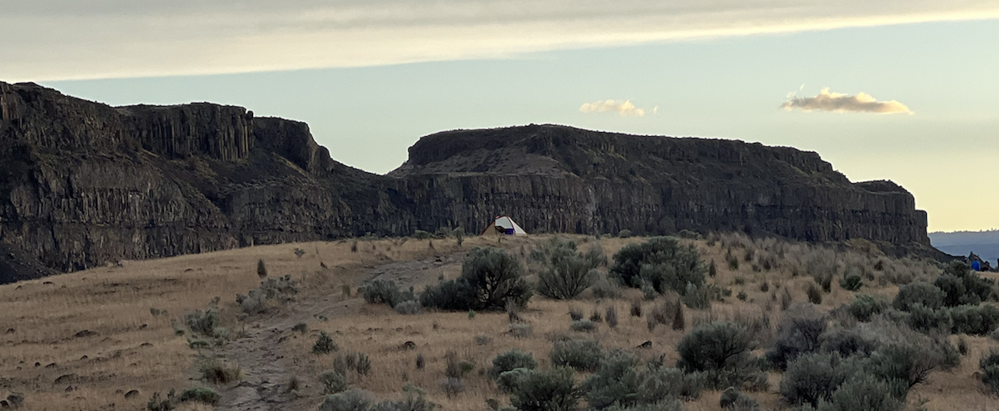

DSGN 260 | Winter 2023

Xin chào! my name is Taylor Truong, I’m a 4th year at Western Washington University majoring in Design, and minoring in UX Design. I am 21 years old and was born in Singapore. I moved to China when I was a baby, then moved to the U.S. when I was 7 years old. I’ve lived in Sammamish and Issaquah for most of my life but am currently living in Bellingham, WA. Some of my favorite hobbies include drawing, skiing, music, gaming, and eating. My favorite food is Vietnamese and Chinese cuisine as I’m half Viet and half Chinese! My favorite Vietnamese dish is Banh Cuon and my favorite Chinese dish is Biang Biang noodles.
One of my favorite places in Washington is Ancient Lakes. It's a camping spot in Quincy, WA. I try to go there every summer. It used to be a really private area that wasn't well known, but it seems to have grown in popularity over the last few years. The first time I went was 3 or so years ago. We backpacked there and did not see a single person in sight. Last summer I went back and there were over 5 groups camping there! During the day, you can hike to the waterfall or just around the area. At night, the stars are beautiful.
